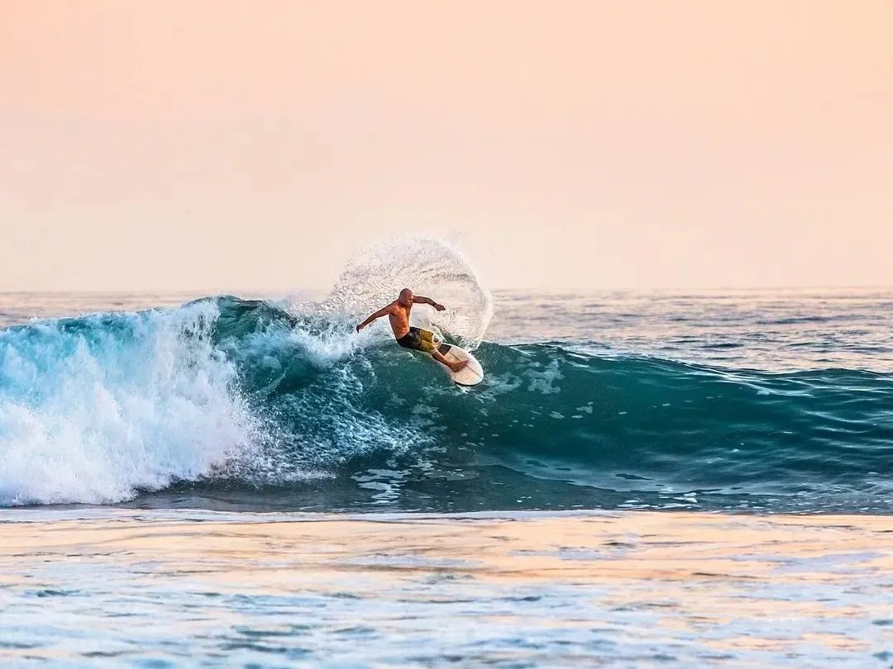
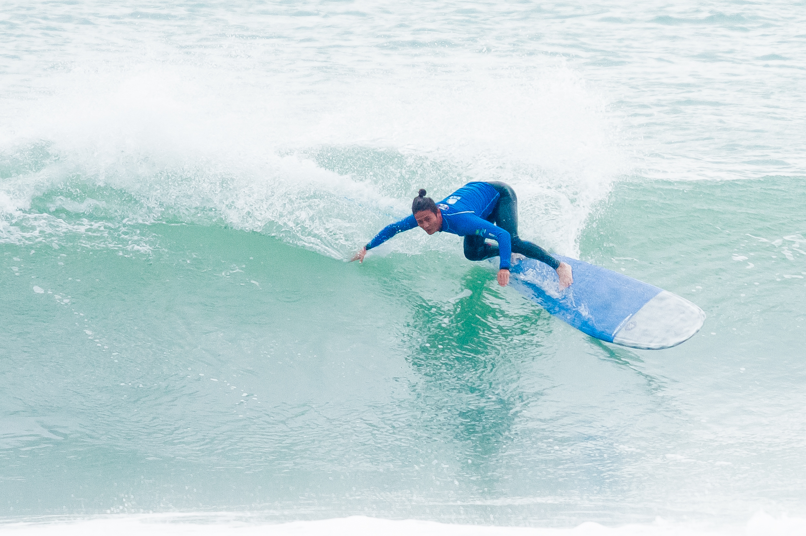
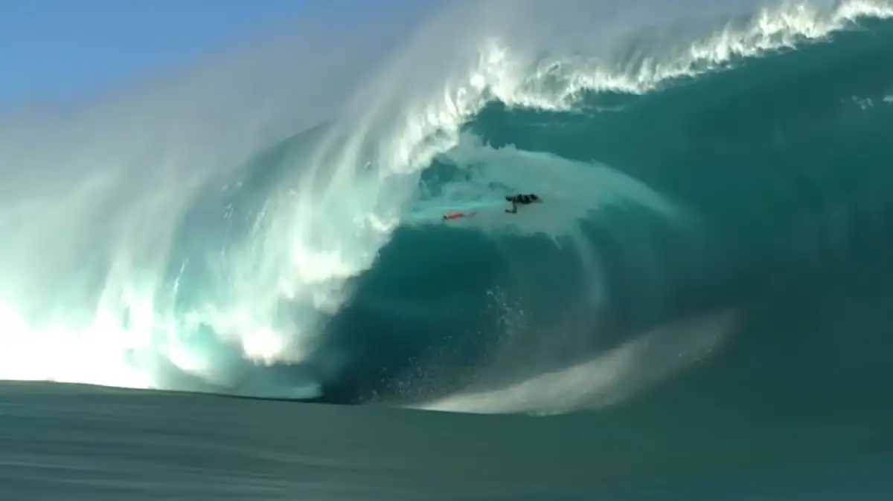
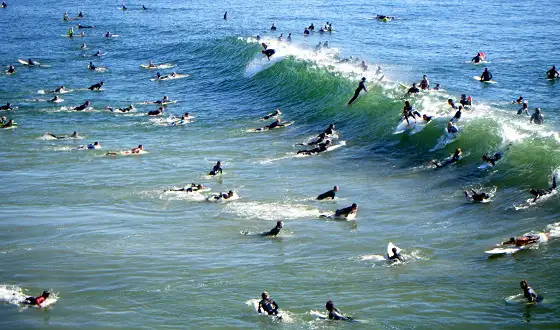
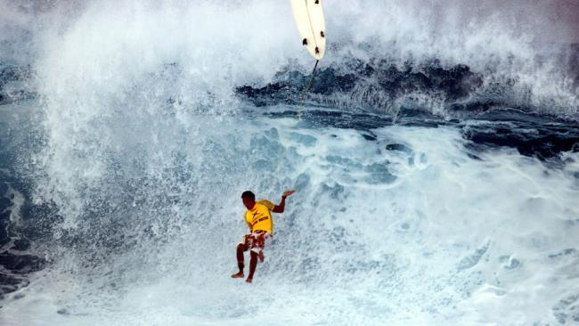
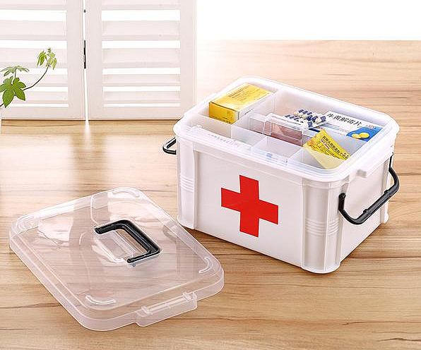
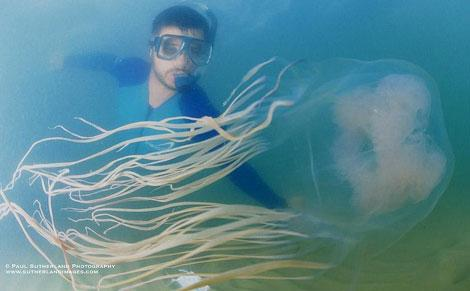

什么是冲浪？
冲浪是以海浪为动力的极限运动，冲浪者以冲浪板和脚绳为装备，经由等浪、看浪、划水、抓浪、起乘站立，以身体重心、肩膀、双腿控制冲浪板的走向，以此滑行和解锁各类技术动作。

冲浪运动对身体有哪些好处？
- 锻炼肌肉：能锻炼到背部、肩部、手臂和腿部的肌肉，提升力量和耐力
- 增强平衡感：在海浪上保持平衡的过程有助于改善平衡能力和身体协调性
- 提高心肺功能：运动过程中会使心肺得到充分锻炼，增强心肺功能
- 改善灵活性：冲浪的各种动作可以增加身体的柔韧性和关节灵活性
- 缓解压力：在与大海的互动中可以释放压力，带来身心的放松和愉悦
- 增强核心力量：保持稳定的站姿需要强大的核心肌群参与，从而强化核心力量。
- 提升身体素质：综合提升身体的各项素质，包括体能、敏捷性等


冲浪运动有哪些常见的安全隐患？
- 溺水危险：可能因被浪打翻、卷入浪中或疲劳等导致溺水
- 碰撞伤害：与其他冲浪者、礁石等发生碰撞，造成身体损伤
- 海洋生物伤害：有可能被水母等海洋生物蜇伤
- 海浪冲击：强大的海浪可能对身体造成猛烈冲击，导致擦伤、撞伤等
- 板体伤害：被冲浪板击中身体
- 恶劣天气：如突然的风暴等恶劣天气状况可能带来危险
- 晒伤：长时间在阳光下可能导致晒伤
- 体能透支：过度消耗体能而引发身体不适或危险



如何避免冲浪时的安全隐患？
- 提前了解海域：熟悉冲浪地点的海况、水流、礁石分布等情况
- 关注天气：避免在恶劣天气或风暴来临前冲浪
- 接受专业培训：掌握正确的冲浪技巧和安全知识
- 做好热身：充分活动身体，减少受伤风险
- 佩戴合适装备：如，质量好的冲浪板、脚绳、潜水服等，且确保装备状态良好
- 保持体能：合理安排休息，避免过度疲劳
- 注意观察：随时观察周围环境，包括其他冲浪者和海洋状况
- 遵循规则：遵守冲浪区域的规则和礼仪
- 携带必要急救物品：如，简单的医疗用品
- 结伴冲浪：互相照应和提醒
- 及时上岸：感觉不适或危险时，立刻上岸
- 注意海洋生物：尽量避开可能有危险海洋生物的区域
- 不高估自己能力：根据自身水平选择合适的浪况


小贴士
温馨提示：一定要敬畏自然，不要小瞧来自大自然的力量，盲目自信。